Securing MongoDB Access
Abstract
This document describes how to secure MongoDB access when the MongoDB database server is installed on the same host as the Syracuse Web Server. It also explains the principles to secure access through firewalls in case MongoDB and Syracuse are not running on the same host.
Known MongoDB access security issue in Sage X3 Warehousing V7 and U8
MongoDB does not use a login/password or a certificate to connect to Syracuse in Sage X3 Warehousing V7/U8. By default, any Mongo client on the network can connect to MongoDB.
You can secure MongoDB database access using networking tools:
- By restricting the network interface that binds to the loopback network interface (in case the MongoDB server is installed on the same machine as the Syracuse Web server),
- By using firewalls (in case MongoDB is installed on a different machine than the Syracuse Web server, or in the case of multiple MongoDB and/or Syracuse instances on multiple machines).
From U9 onward, you have the option to create a certificate during the installation to secure MongoDB access. Any client (Syracuse, Mongo, Robomongo) has to use this certificate to be able to connect to MongoDB.
However, you can still use the method described above:
- If you did not set up a certificate,
- If you want to add extra security even when a certificate is used.
Binding MongoDB to the loopback network interface - Single-server installation
This section applies to configurations where MongoDB and Syracuse are hosted on the same physical or virtual machine. This is the case for most Sage X3 Warehousing installations.
You have to configure the Syracuse Web Server so that all its network connections to the MongoDB server use the loopback pseudo network card. This is done by using "localhost" as the host name or "127.0.0.1" as the IP address.
Once these parameters have been changed at the Syracuse level, you can change the MongoDB server settings so that the server only listens to the loopback pseudo-NIC, and does not reply to connections coming from any other machine.
Changing the Syracuse configuration
The operations listed below have to be performed before changing the MongoDB configuration.
Note: If you have installed Sage X3 Warehousing (ERP / HRM) V7 or Sage X3 Warehousing ERP U8 using "localhost" as the host name for the MongoDB server, this step is not necessary. Follow the procedure to double-check your configuration.
Syracuse Administration - Endpoint database parameters modification
Note: This section applies to V7 and U8.
- Log in to Sage X3 Warehousing through the Syracuse Web Server from an internet browser.
Use the account of a member of the Administrators group (for example, "admin"). - Go to Administration > Endpoints > Endpoints.
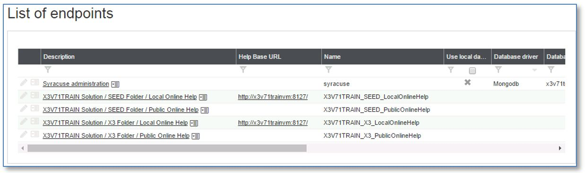 - Click the Syracuse administration endpoint to load the record, and click Edit.
- Make sure Use local database settings is selected. If not, select it.
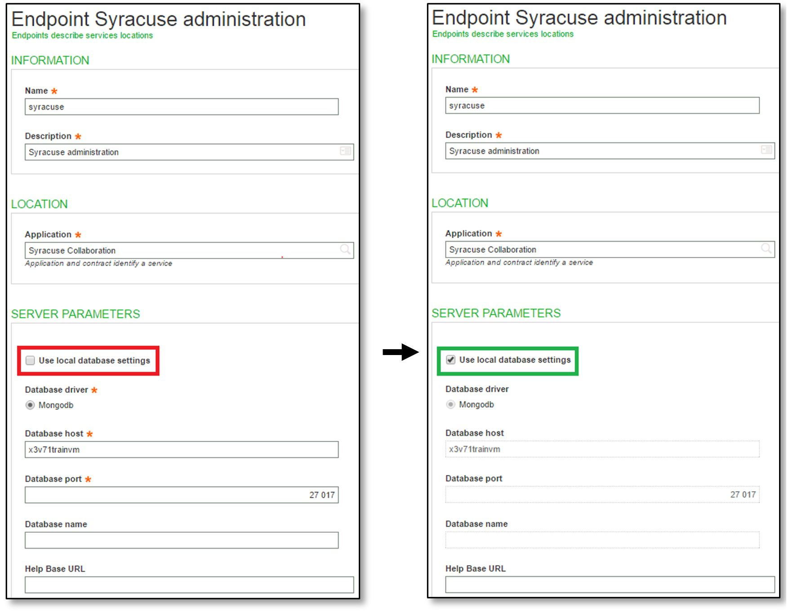
It tells the Syracuse server to use the nodelocal.js file to retrieve MongoDB access definitions, instead of the host name defined in this record.
Note: Alternatively, the Database host field can be updated to "localhost". - Save the settings.
- Close the session.
Changing the Syracuse Web Server configuration file (nodelocal.js)
- Browse to the root directory of the Syracuse Web Server.
- Go to syracuse\bin (Windows) or syracuse/bin (Linux).
- Locate nodelocal.js, and make a backup copy of it.
- Edit nodelocal.js, and locate property
hostname. - Change the current server name to "localhost".
Before:
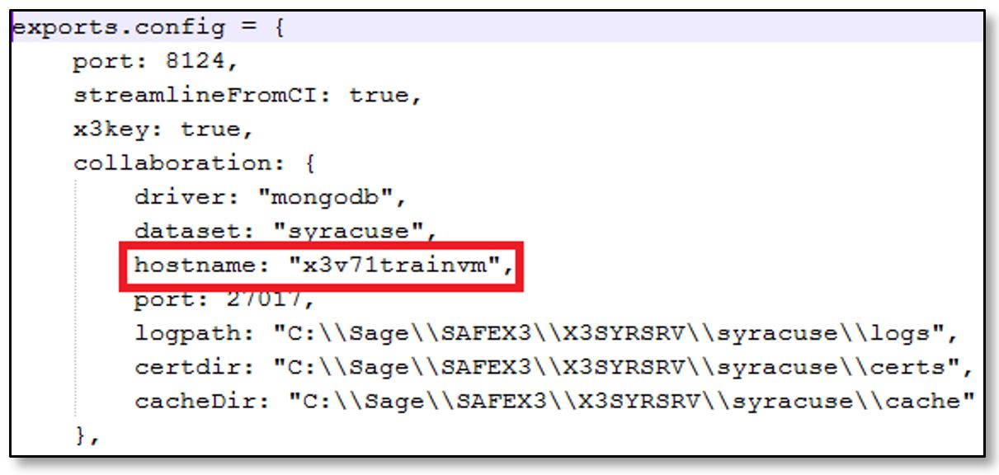
After:
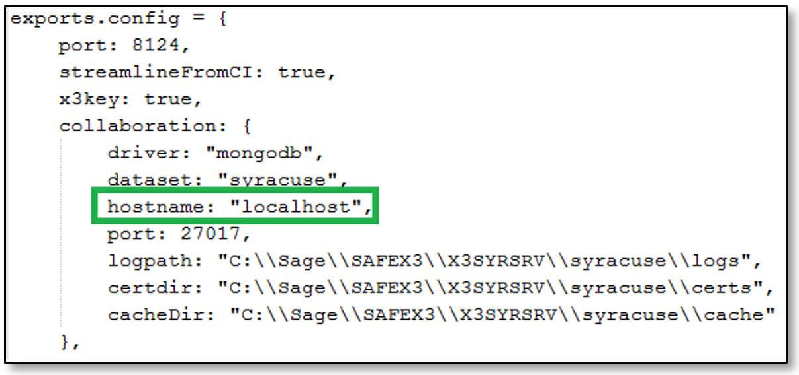 - Save the changes.
Note: On Windows servers, you may have to run the text editor as Administrator.
Stopping the Syracuse Web Server
After editing nodelocal.js, you must restart the Syracuse Web Server for your changes to be taken into account. This has to be done within a planned application maintenance window. Sage X3 Warehousing accesses will be stopped for interactive users, but batch tasks will continue to run, as will Web Services using the Classic Java Web Services / ADC server.
We suggest that you stop the Syracuse Web Server without restarting it immediately. Restart it after updating the MongoDB server configuration.
To stop the Syracuse Web Server:
- (On Windows) Using an account belonging to the local Administrators group of the server, stop and restart the "Agent_Sage_Syracuse_-_<NODENAME>" service, where <NODENAME> is the cluster/node name that was set up during the installation ("NODE0" by default). You can do so:
- From the Windows Services console.
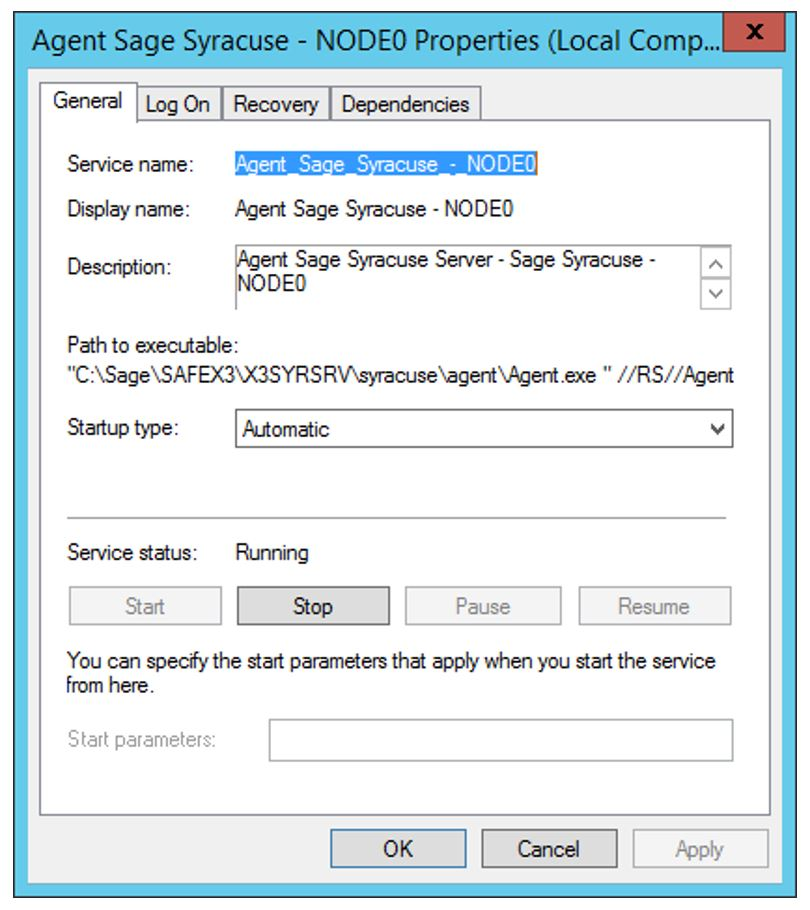 - From the command interpreter (cmd).
NET STOP Agent_Sage_Syracuse_-_<NODENAME>
- From the Windows Services console.
- (On Linux - RedHat Enterprise Linux 6 or Oracle Enterprise Linux 6):
- Log in as "root" or get root privileges using
suorsudo - Run the following command:
initctl stop sagesyracuse-agent-<nodename>
Wherenodenameis the cluster/node name of the Syracuse instance that was set up during the installation.
The default value is "node0". By default, the command would be:initctl stop sagesyracuse-agent-node0
If you do not remember the cluster/node name, you can get this information by running the following command:ls /etc/init/sagesyragent.conf
Use the file name found (without the .conf extension) for theinitctlcommand.
- Log in as "root" or get root privileges using
Changing the MongoDB configuration
On Sage X3 Warehousing V7
MongoDB is not packaged on the Sage X3 Warehousing V7 DVD. You have to download version 2.4.x from www.mongodb.com, and then install and configure it by yourself. Make sure you know the configuration file name and location.
On Linux, you have to either download it from www.mongodb.com, or from the MongoDB distribution from the RedHat extensions repository.
If you do not know where the configuration file is:
- (On Windows) You can get this information from the arguments passed by the
-configoption in the command line that starts the MongoDB service:
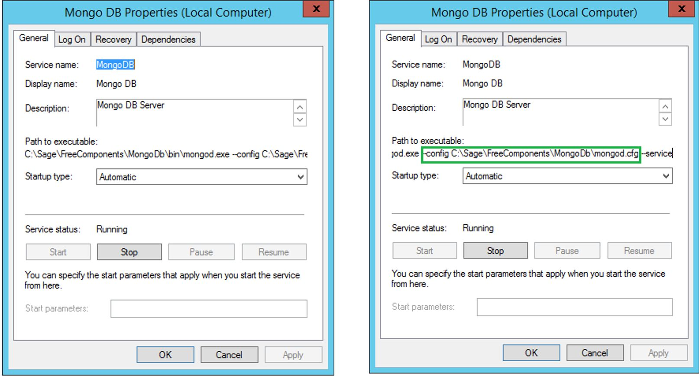
In the example above, MongoDB 2.4 was installed in C:\Sage\FreeComponents\MongoDB, and the configuration file is in C:\Sage\FreeComponents\MongoDB\mongd.cfg. - (On Linux) You can check the /etc/init.d script that starts MongoDB to find the location and name of the configuration file.
Modifying the MongoDB 2.4 configuration file
- Make a backup copy of the configuration file.
- (On Windows)
- Edit the MongoDB configuration file.
- Add the following line:
bind_ip=127.0.0.1
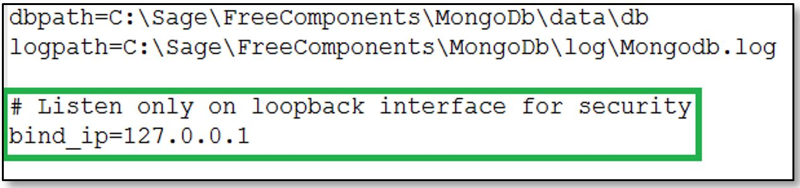 - Save and exit.
- (On Linux)
- Edit the MongoDB configuration file.
- Add the following line:
bind_ip=127.0.0.1
Depending on where MongoDB was sourced, such a line may already exist and would have been commented out. In that case, just uncomment the line. - Save and exit.
Restarting MongoDB 2.4
- (On Windows) Stop and restart the MongoDB service.
Note: The service name may be different as it was manually installed.
This can be done:- Using the Windows Services console plug-in.
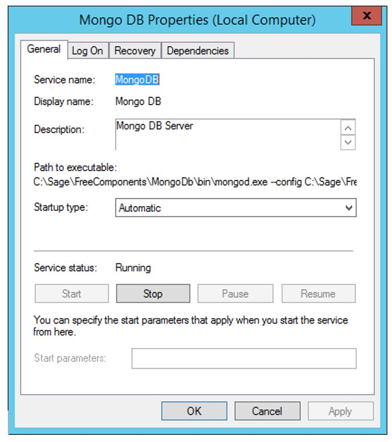
Click Stop and then Start. - Using the command line from a cmd window in an elevated privilege:
NET STOP <SERVICE_NAME> NET START <SERVICE_NAME>
- Using the Windows Services console plug-in.
- (On Linux) Stop and restart the mongod process.
This can be done:- Using an init.d script: In that case, use the following command while logged in as root or elevated to root:
service <service_name> stop service <service_name> start
- Using an init script: In that case, use the following command while logged as root or elevated to root:
initctl stop <service_name> initctl start <service_name>
- Using an init.d script: In that case, use the following command while logged in as root or elevated to root:
On Sage X3 Warehousing U8
MongoDB 2.6 is packaged on the Sage X3 Warehousing U8 DVD, and it is installed and configured through an IZpack java installer.
Locating the MongoDB 2.6 configuration file
The name and location of the configuration file are pre-set up:
- On Windows:
<MongoDB_Installation_Path>\conf\MongoDB.conf - On Linux:
<MongoDB_Installation_Path>/conf/MongoDB.conf
Warning: On Linux, there is also a <MongoDB_Installation_Path>/mongodb.conf which has nothing to do with the MongoDB database configuration file. It is an initctl / systemctl script built during configuration to set up MongoDB as a Linux service.
Modifying the MongoDB 2.6 configuration file
- Make a backup copy of the configuration file.
- Edit the MongoDB.conf file.
Caution: On MongoDB 2.6, the pre-packaged configuration files use the YAML format. This is different from what was used on MongoDB 2.4. - Locate the bindIp: clause of the net: section of the configuration file.
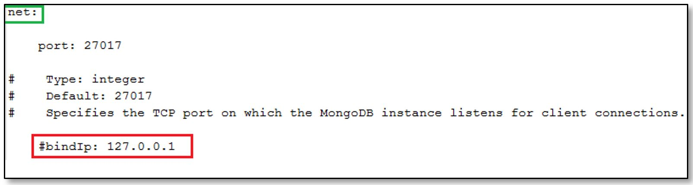
The bindIp: clause is commented out. Uncomment it.
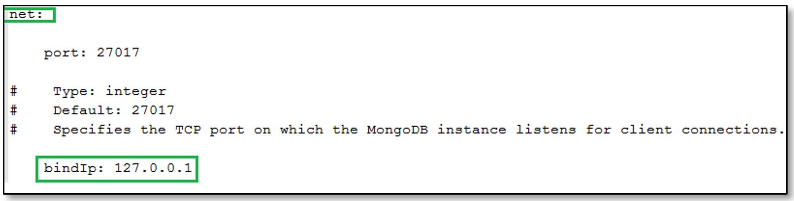 - Save and exit.
Restarting MongoDB 2.6
- (On Windows) Stop and restart the "MongoDB for Sage Syracuse - MONGO01" service.
Note: MONGO01 is the default node name. You may have changed it during the installation.
This can be done:- Using the Windows Services console plug-in.
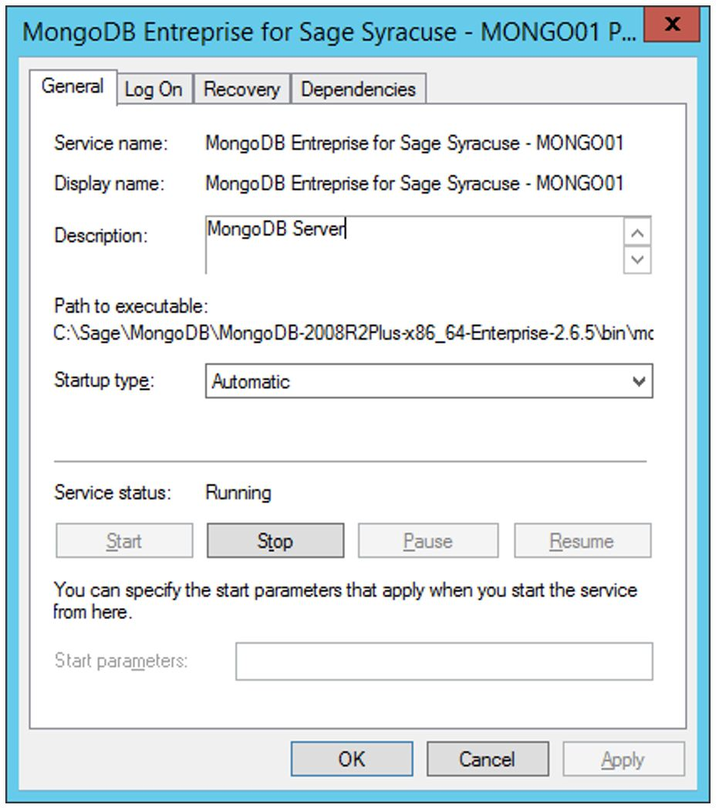
Click Stop and then Start. - Using the command line from a cmd window in an elevated privilege:
NET STOP "MongoDB for Sage Syracuse - MONGO01" NET START "MongoDB for Sage Syracuse - MONGO01"
Caution: Make sure you put the service name between double quotes ("") as it contains spaces.
- Using the Windows Services console plug-in.
- (On Linux) Stop and restart the mongod process using an init script. By default, it is found in /etc/init/ and is named mongodb_for_sage_syracuse_-_mongo01.conf. If you do not remember its name, type
ls /etc/init/mongodb*to get the name of the generated init script.
To perform the stop/start operation, use the following commands:initctl stop mongodb_for_sage_syracuse_-_mongo01 initctl start mongodb_for_sage_syracuse_-_mongo01
Note:- Replace "mongo01" with the proper name, if necessary.
- Remove the .conf extension at the end.
Starting the Syracuse Web Server
The process to start the Syracuse Web Server is similar to the one described in Stopping the Syracuse Web Server. Substitute the start command for the stop command.
Tests and troubleshooting
After a few seconds, try to connect to Sage X3 Warehousing through Syracuse. If you can connect, everything is fine. If not, refer to the troubleshooting section below.
Troubleshooting
Potential error #1
The following error is displayed when you connect to the usual Syracuse Web Server URL from your browser:
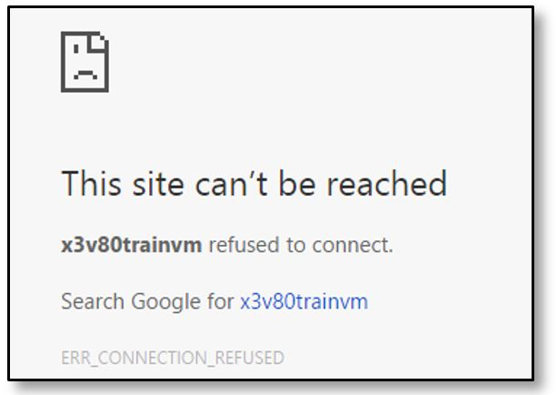
This means that Syracuse was not started.
Perform the following checks:
- Make sure the Syracuse service is running. In doubt, start the Syracuse Agent service again.
- If the error remains, check the Syracuse nodelocal.js configuration file:
- Compare it to the backup copy.
The only difference should be the host name. - Pay attention to the quotes before and after the host name.
If one of them is missing, file parsing may fail.
- Compare it to the backup copy.
- Correct and restart. If the error remains, revert to the configuration file backup and ask for assistance.
Potential error #2
The following error is displayed when you connect:
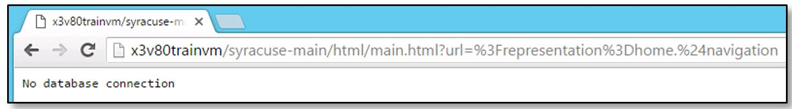
This means that Syracuse was started but that it cannot connect to MongoDB.
Perform the following checks:
- Make sure the MongoDB service is running:
- If not, launch the service again.
- If the error remains, correct the MongoDB configuration file by referring to the MongoDB log file for more information.
If no information is available, try to launch mongod from the cmd console with command<MongoDB_binaries_path>\mongod -config <MongoDB_config_file_full_path>. Errors will be displayed on screen. - Investigate and correct until MongoDB runs again.
- If MongoDB is running but Syracuse cannot connect to MongoDB, it is a network filtering issue:
- Make sure Syracuse has been restarted. In doubt, stop and restart the Syracuse agent service.
- If the error remains, check for mistakes in the
hostnameproperty of the nodelocal.js configuration file.
- Once the error is found and corrected, restart Syracuse and perform tests.
Potential error #3
The following error is displayed when you connect (even if you try to wait and refresh the page):
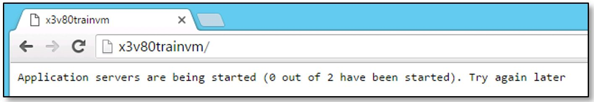
This means that the Syracuse server was able to connect to MongoDB, but that it cannot load the Syracuse endpoint definition from the database. This usually happens when the Syracuse administration endpoint is not updated after changing the configuration files for MongoDB or Syracuse (nodelocal.js).
In that case:
- Stop Syracuse through the Syracuse Agent service.
- Stop the MongoDB service.
- Temporarily revert the changes done in the MongoDB configuration file to re-open the access to all network interfaces.
- Start the MongoDB service.
- Start Syracuse through the Syracuse Agent service.
- Edit the Syracuse administration endpoint entry to select the Use local database settings check box.
- Stop Syracuse through the Syracuse Agent service.
- Stop the MongoDB service.
- Start the MongoDB service.
- Start Syracuse through the Syracuse Agent service.
- Test again.
Alternatively, you can use the robomongo utility installed on the MongoDB server (if any):
- To change the syracuse record in the EndPoint collection,
- To set the localDatabase field for this record to "true".
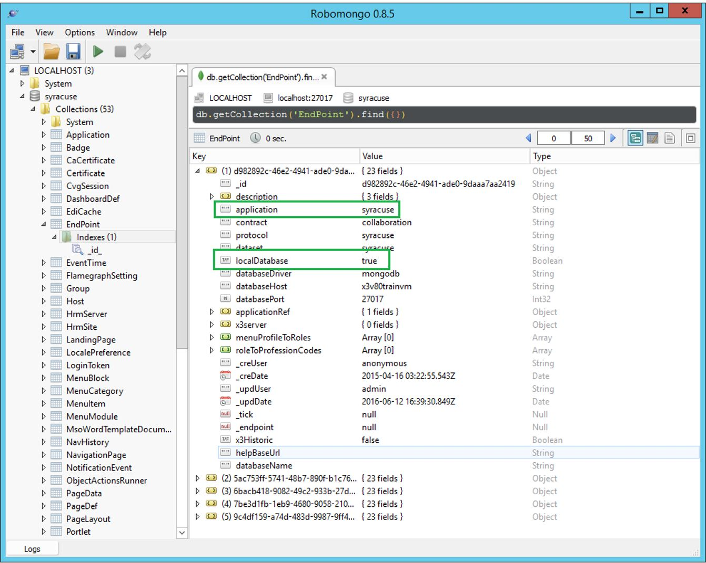
This modification can also be done with the mongo command line from the MongoDB host. In this case, only the following sequence of operations are required:
- Stop Syracuse.
- Update the MongoDB record as described above with robomongo (or mongo).
- Start Syracuse.
- Test.
Multi-server installation
This applies to situations where MongoDB and Syracuse are not on the same host, or in the case of multiple MongoDB and/or Syracuse hosts. In these cases, you cannot use the loopback binding method.
Instead, you have to:
- Enable a firewall within or outside the MongoDB host.
- Properly set up all the ports needed for administration (RDP for Windows, or SSH for Linux).
- Properly set up all the other ports that are needed, depending on the case (Active Directory, Windows shares, Backup agents, etc.).
- Open TCP port 27017 for incoming requests to the Syracuse hosts IP addresses only.
You may need assistance from a networking or firewall specialist for these operations.
If you are using virtual machines within VMware ESX, Microsoft Hyper-V, or any other virtualization platform, and if you do not want to set up a firewall:
- In the MongoDB and Syracuse VMs, create an additional virtual network within the virtualization platform dedicated to network traffic.
- Add an additional network card connected to this dedicated virtual network to each MongoDB and Syracuse VM.
- Assign static IPs within a relevant (unused) Class-C RFC-1918 network to the additional network cards of each MongoDB and Syracuse VM.
- Locally register the "private" IP addresses of each MongoDB and Syracuse VM with the relevant host names (on C:\Windows\System32\Drivers\etc\hosts for Windows, or on /etc/hosts for Linux).
Note: You can keep the same host names but you have to change the network domain to something like "mongodb.lan". - Force MongoDB traffic to use the virtual dedicated network:
- In Syracuse, edit the Syracuse administration endpoint by selecting the Use local database settings check box.
- On the MongoDB hosts, update the
bind_ip =orbindIp:clause of the MongoDB configuration file to the IP address of the dedicated network card. - On the Syracuse hosts, replace the original MongoDB host name by the new "private network" host name for each server in the nodelocal.js file.
You can use the same principles on physical servers if you have an unused network interface card in each server. With two servers (one MongoDB server and one Syracuse server), a cross-over cable could work, but we recommend the use of a switch. This is mandatory if there are more than two servers involved.